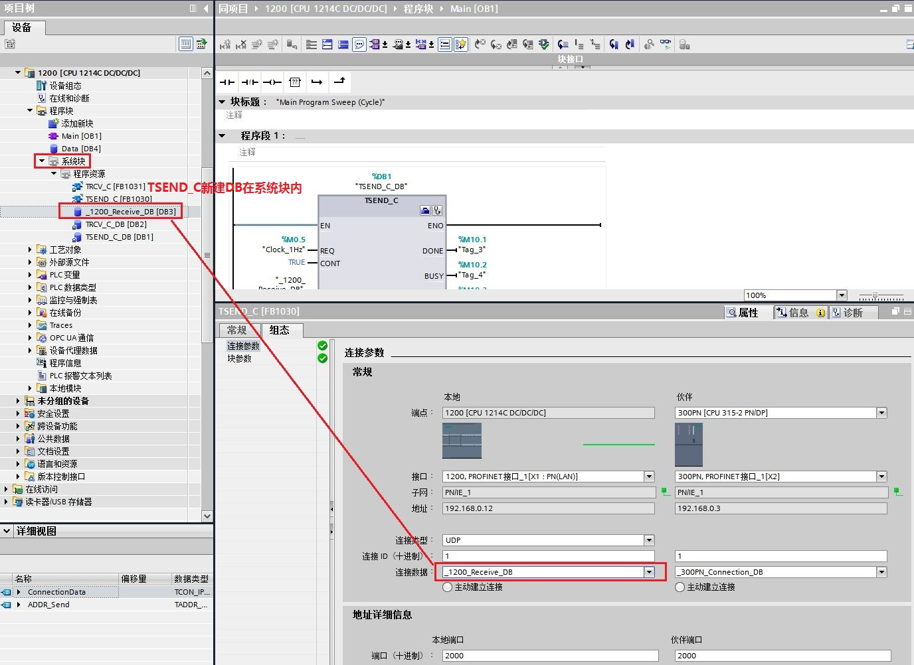
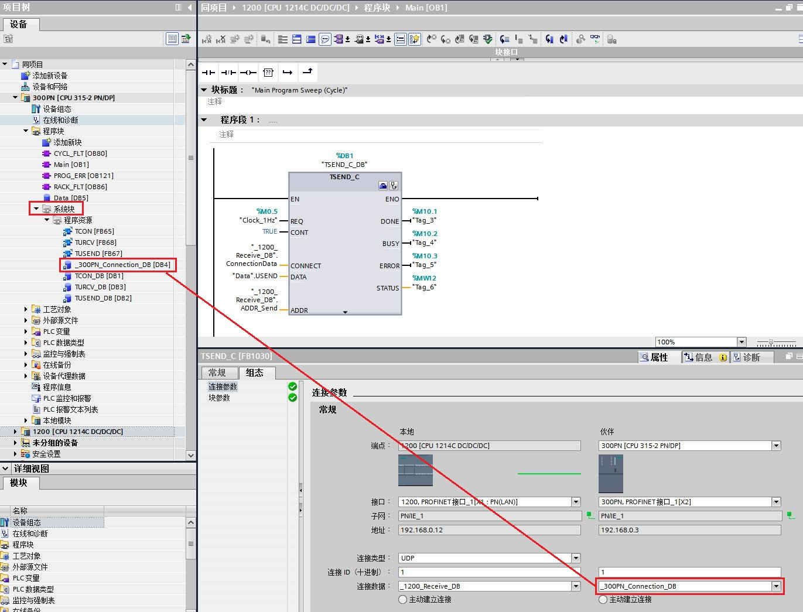
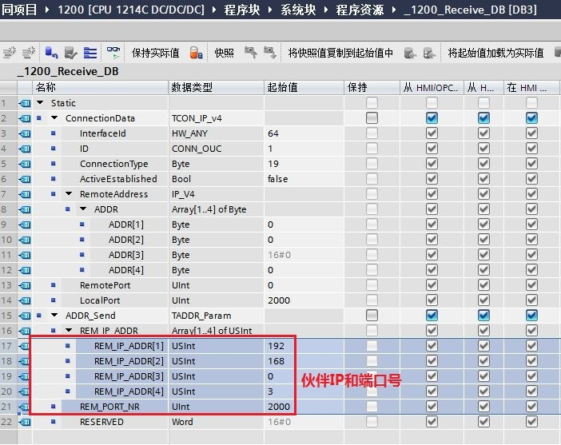
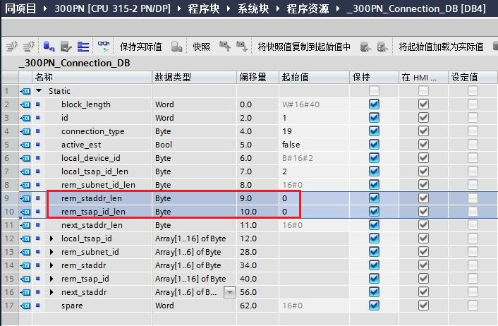

以下情况时需要注意确认部分参数的正确设置。
①1200侧同时使用TSEND_C和TRCV_C做指定或未指定伙伴UDP通信，参考图3确认参数的正确设置；
②在1200内使用TSEND_C新建自动生成300PLC连接描述DB块，参考图4确认参数的正确设置；
需确认注意的参数设置：
1.在1200侧使用TSEND_C可新建自动生成1200PLC的连接描述DB块（_1200_Receive_DB），如图1所示和300PLC的连接描述DB块(_300PN_Connection_DB），如图2所示。

图1. TSEND_C新建自动生成1200PLC的连接描述DB块

图2. TSEND_C新建自动生成300PLC的连接描述DB块
2.确认TSEND_C新建自动生成1200PLC的连接描述DB块内，ADDR_Send数据结构必需包含伙伴IP地址和端口号，如图3所示。

图3. 确认1200侧新建生成DB内包含伙伴IP和端口号
3.确认TSEND_C新建自动生成300PLC的连接描述DB块内，rem_staddr_len和rem_tsap_id_len参数必需设置为0，如图4所示。

图4. 确认300侧新建生成DB内rem_staddr_len和rem_tsap_id_len参数必需为0